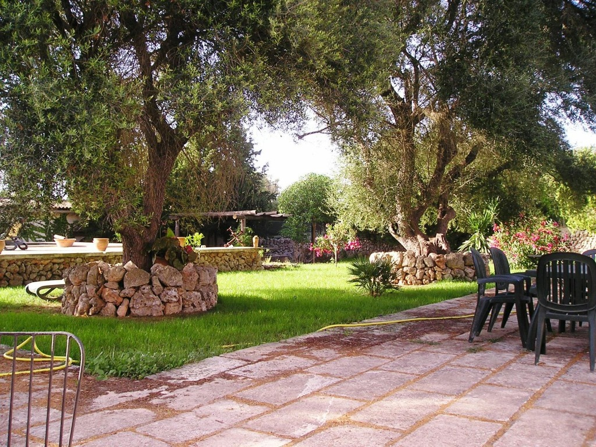

Finca Son Creixell: Tradición y Relax
Descubra una joya del siglo XVII totalmente renovada en el corazón de una finca de 70 hectáreas en Sineu.
Su Refugio Histórico
Alojamiento
4 Habitaciones
Baños
4 Baños
Extensión
70 Hectáreas
Auténtico estilo rústico mallorquín
Finca Son Creixell es una casa antigua del siglo XVII, totalmente renovada para ofrecer el máximo confort sin perder su esencia. Ubicada en un entorno rural privilegiado, los huéspedes pueden disfrutar de la tranquilidad absoluta y del contacto con la naturaleza.
Relájese en nuestro jardín interior con piscina y césped, o explore la inmensa finca donde podrá ver ovejas y cerdos en su hábitat natural. Un espacio único para desconectar en familia o con amigos.

¿Listo para su escapada a Son Creixell?
Reserve su estancia en nuestra finca histórica y viva la experiencia más auténtica de la Mallorca rural.

Ubícanos en Sineu
El corazón rural de Mallorca